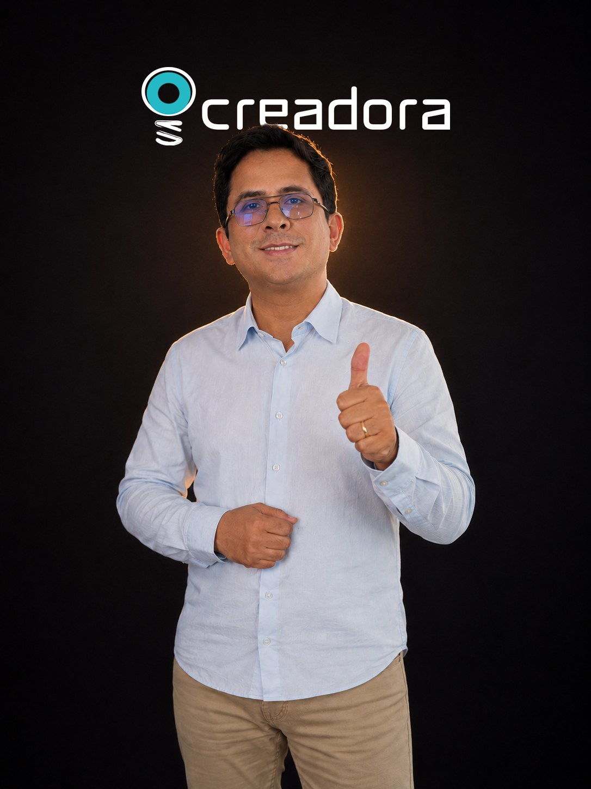

Enfoque
Más que contenido audiovisual: posicionamiento y confianza.
Comunicación en salud
Producción audiovisual y estrategia digital para profesionales y clínicas de la salud que quieren posicionarse como referentes en su especialidad.
01 / El contexto
Tu presencia digital determina si confían en ti antes del primer contacto.
La comunicación en salud necesita algo más que “videos bonitos”: requiere entender el lenguaje, la sensibilidad y la ética del sector para transmitir cuidado, precisión y cercanía.
Cada guion, cada toma y cada pieza debe ayudar a construir una percepción concreta: un profesional confiable, presente y cercano.
02 / Nuestro diferencial
Más que contenido audiovisual: posicionamiento y confianza.
Comunicación pensada específicamente para profesionales y clínicas de la salud.
No entregamos y desaparecemos: acompañamos la estrategia mensual.
El objetivo es que el paciente confíe antes de conocerte.
03 / Formato clave
Una conversación bien producida puede posicionarte, humanizar tu marca, educar a tu audiencia y convertirse en múltiples piezas de contenido para redes.

04 / Imagen profesional
Una foto de calidad, actualizada y en contexto profesional ayuda a generar seguridad desde el primer vistazo y mantiene coherencia con la marca.
La foto de Andrés se usa aquí como referencia visual; reemplázala por fotografía de clientes cuando exista un portafolio específico de salud.
05 / Inversión
Tres niveles de acompañamiento, según el momento de la marca y el volumen de atención.
Para profesionales que empiezan su presencia digital.
Bs 2.000 / mes
Para clínicas que quieren posicionarse como referentes.
Bs 3.500 / mes
Para instituciones que buscan liderazgo en el sector salud.
Bs 5.000 / mes*
*Cotizar según necesidades específicas.
Facturación: los precios no incluyen factura. Si requieres factura con validez tributaria, se deberá añadir el 16% correspondiente al monto total del servicio contratado.
06 / A la medida
Siguiente paso
Trabajamos de la mano contigo desde el primer guion hasta la publicación. Cada proyecto es único: conversemos y diseñemos una estrategia a la medida de tu profesión o clínica.